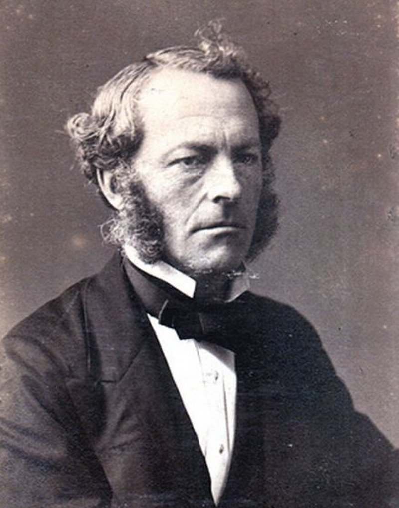

Главная
Измерение коэффицента динамической вязкости жидкости методом Стокса

Задача данного проекта - разработать симулятор, с помощью которого можно наглядно наблюдать, как эксперементально просиходит измерение коэффицента динамической вязкости жидкости, с помошью использрвания лабораторных приборов, методом Стокса.